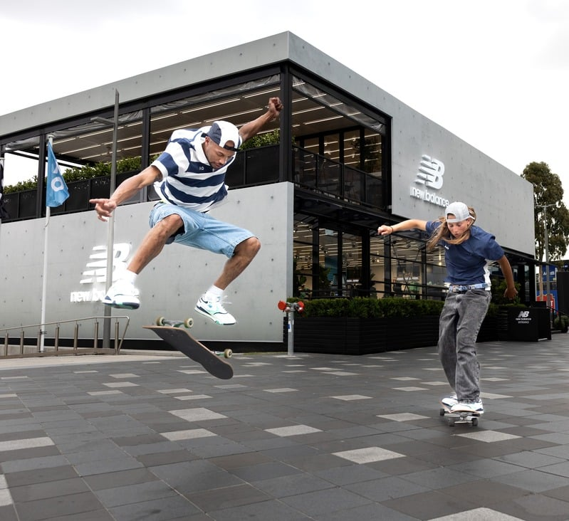
Connection
The view from the inside. Structural access that lets your brand move fast and decide with clarity when it matters.
01 The Engine
Every campaign, every cultural moment, every activation is built by this team — from the world stage of the AO to local courts across Australia, and everywhere in between.
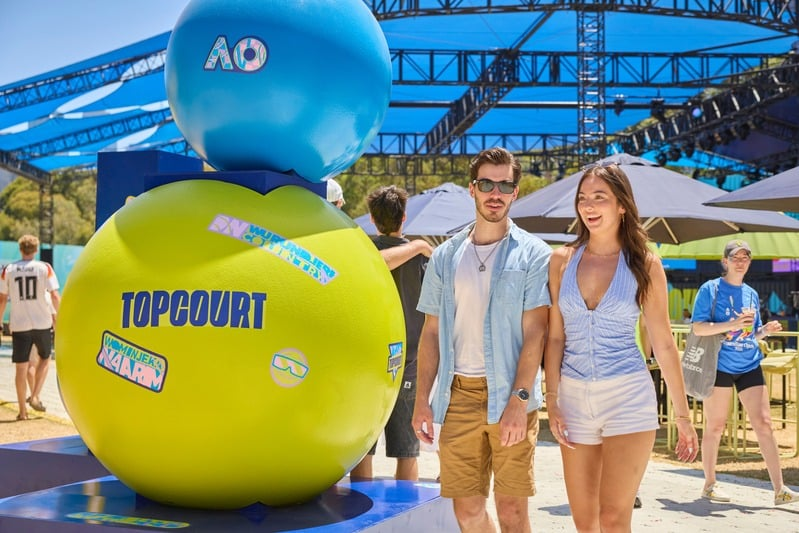
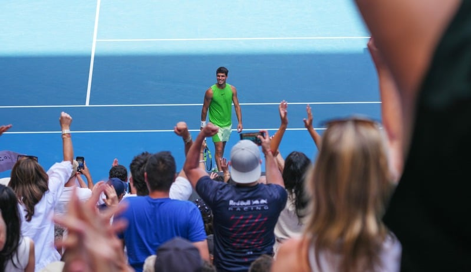
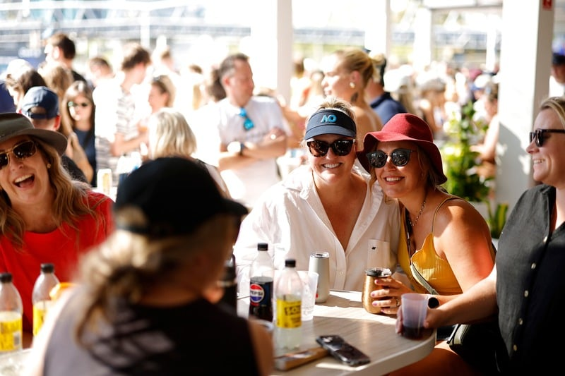
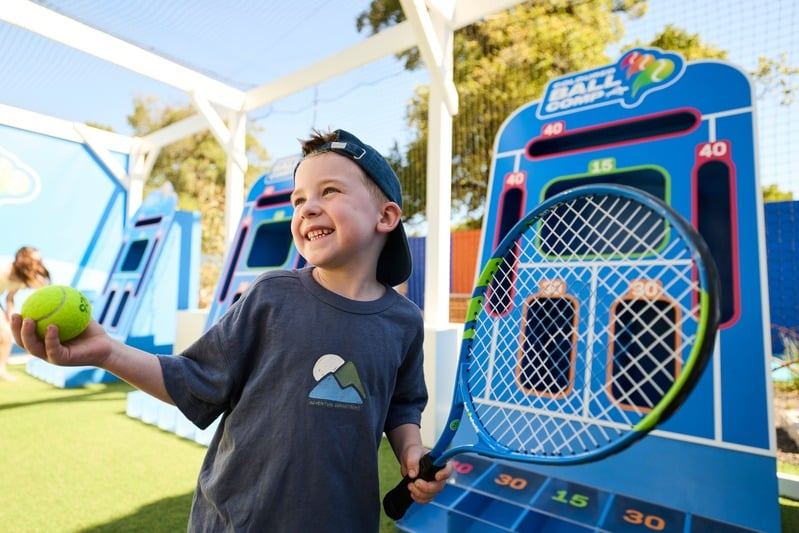
02 The Stage
Sport, music, fashion, food, nightlife. Live from Melbourne Park for three weeks, with the world watching. This is the platform your brand gets to stand on.
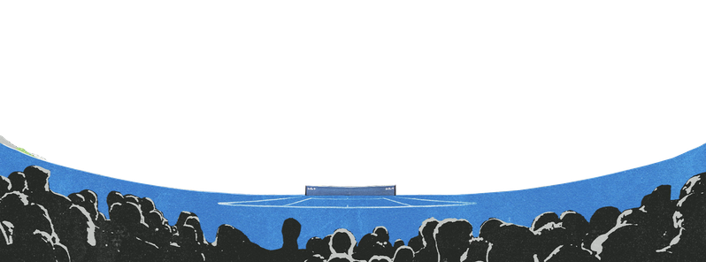
03 The Unfair Advantage
We originate strategy, IP, fan data, precinct and talent. We build our events, so we build the creative with full sight of them.
Built in, structural, ours by default. We are TA, so access to the tournament comes with the territory.
Complete command of internal strategy and decisions. We create opportunities with you instead of waiting to be briefed.
First-party insight from on-site fans and an inbuilt digital ecosystem.
Courtside, behind the scenes. We make creative that can only be made by the team inside our events.
One team, from strategy to screen to activation. No middlemen, no hand-offs, no lag.
No external agency can build what we already have.
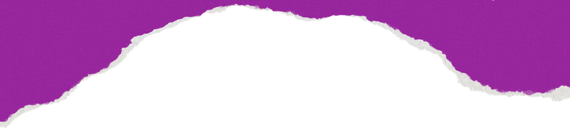
04 The Three Pillars

The view from the inside. Structural access that lets your brand move fast and decide with clarity when it matters.
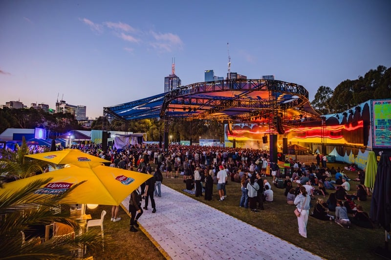
Our events are our media ecosystem. World-class creative, produced at scale, at speed, for a global audience, every single summer.
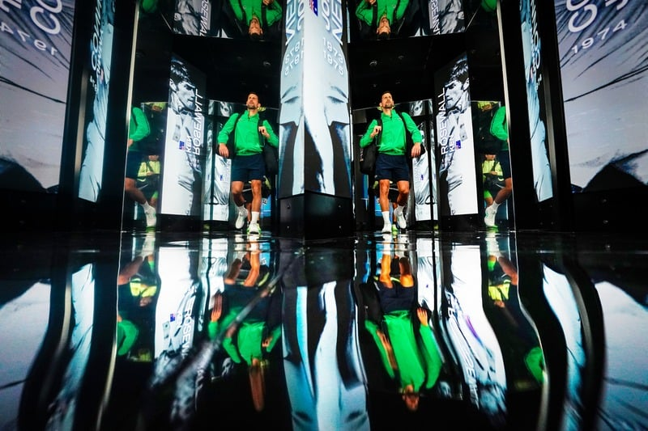
Every summer, we create the moments the rest of the season follows.
05 What We Make
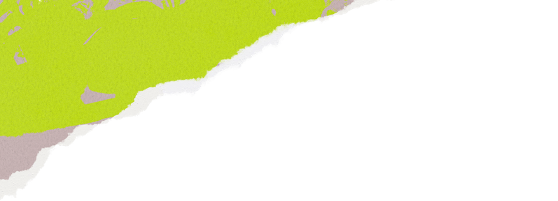
06 Our Work
Our work spans tournament campaigns that reach the world, cultural moments that define the Australian summer, and partner work, where brands plug into all of it. The same teams, the same access, the same craft — open to your brand.
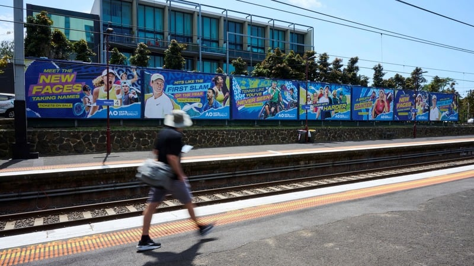
The AO is a three-week event. We needed to keep people thinking about it, and buying, the whole year round.
Working with our partners at BMF, we created a year-round campaign that takes the “more than tennis” feeling of the AO and keeps it switched on all year.
The week before the main draw was traditionally dead space. We needed to turn it into the big-bang kick-off of the entire tournament.
The Week of Firsts. Alongside BMF, we made the warm-up into the main event, with a reason to show up for every kind of fan.
One Point Slam was a brand-new idea. We needed to explain it, sell it, and fill Rod Laver Arena with no track record to lean on.
One point decides everything. A campaign built on a single, impossible idea: everyday Australians with one shot against the best in the world. End-to-end creative and delivery.
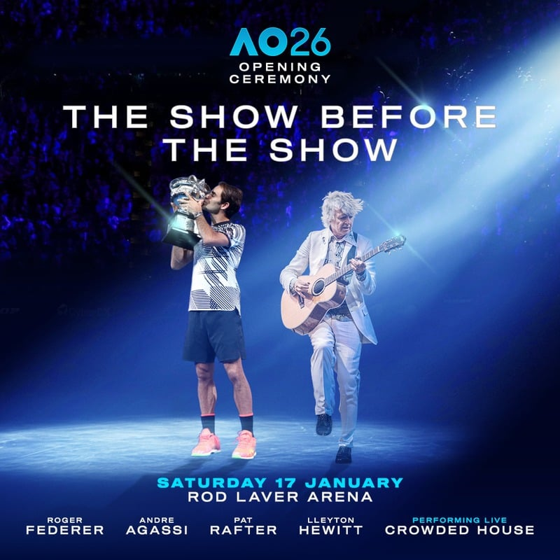
The first-ever AO Opening Ceremony had no history and no pre-existing format. We needed to make it feel like a tradition people had always known — and sell tickets to it.
The Show Before The Show. We turned the Opening Ceremony into a standalone moment fans couldn’t miss.
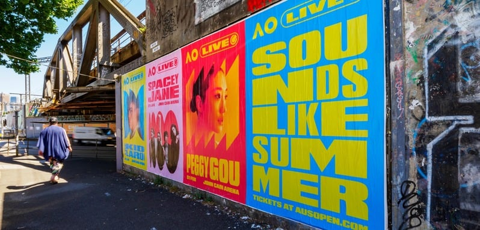
Summer is packed with things to do. We needed AO Live to stand out and sell out against everything else on.
Sounds Like Summer. We turned the AO into a music destination in its own right, with a campaign positioning our event as the peak of the Melbourne summer.
The AO’s premium experience offering expands every year. We need to keep it intimate, targeted and personal to every patron.
A World of Grand Slam Luxury, Reserved for You. We placed the campaign only where affluent audiences already were, and made the AO feel like the most exclusive seat of the summer.
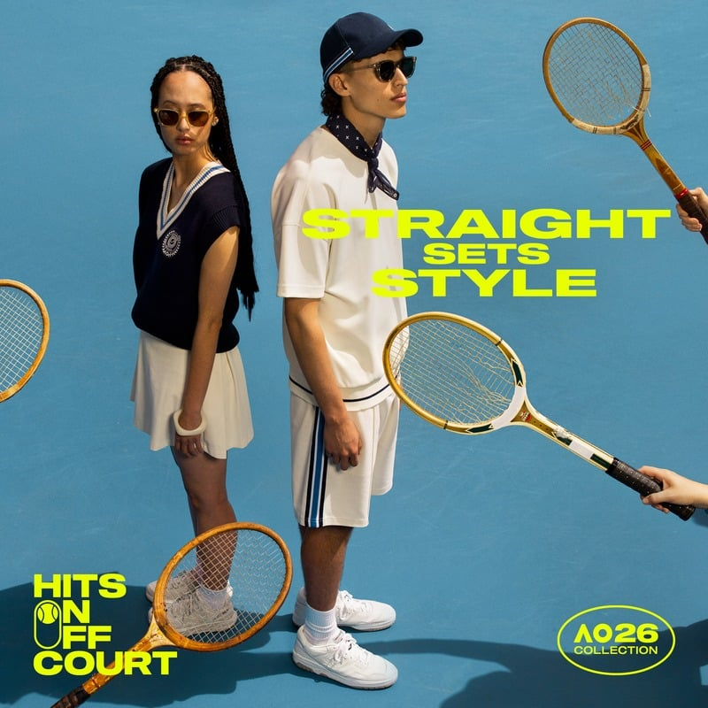
Official merch is usually an afterthought. We needed to turn it into a real retail business people actually wanted to buy from.
Hits On & Off Court. We styled AO gear as Melbourne summer fashion — not souvenirs — and sold it like a brand in its own right.
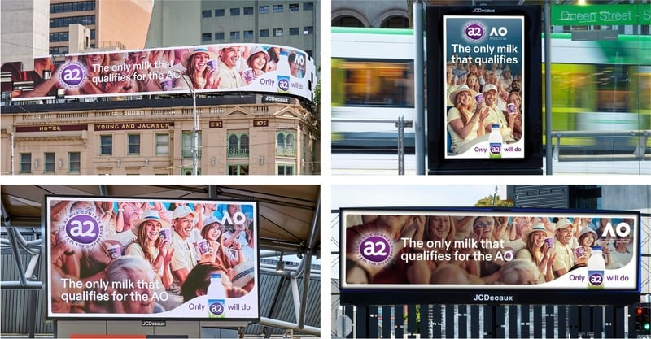
Not all milk is created equal. a2 Milk® needed a cultural moment to match its superior quality, with the ability to deliver serious cut-through.
The Only Milk That Qualifies. We capitalised on the AO’s playful premium nature to deliver the now-iconic AO Frappe® Served up by a2 Milk®.
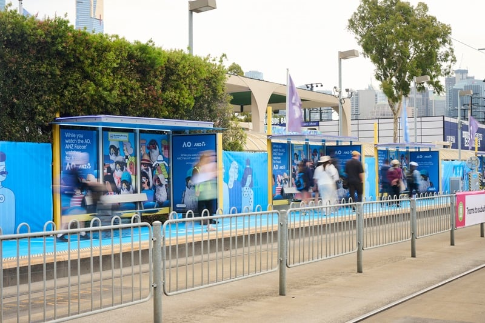
Seamlessly integrate the AO and ANZ Falcon brand worlds into the fan experience.
The moment fans arrive at the AO is a chance to deliver truly high-impact messaging. So we transformed it into a twin showcase of the AO and ANZ brand worlds, with a large-scale takeover of the entire tram stop outside the gates of Melbourne Park.
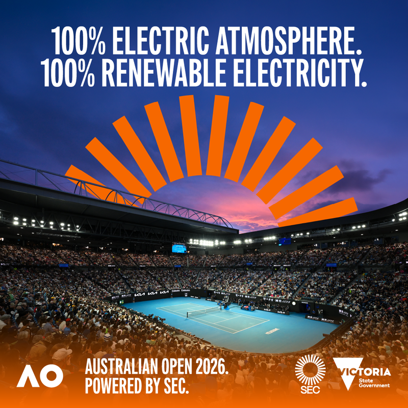
Victoria needs to move to renewable energy, but the public does not see the benefit. SEC wanted to use the AO as a moment to tell Victorians why and how the state plans to transition to renewable electricity.
We used the AO as the ultimate proof point for SEC’s renewable electricity — showing that the power they generate is plenty to keep every experience at the world’s largest Grand Slam running.
With international, mixed-gender teams, the United Cup is a unique event competing in a busy summer, played across two cities. But fan comprehension around what makes the format special needed work.
Tennis Turned Up. A campaign built on two pillars — Loud: the intensity of the UC experience. And Proud: the international UC story on full display.
07 Why We Are On Your Side
Our incentive is simple. When your activation works, the partnership performs. We are built to make your brand win within our sport.